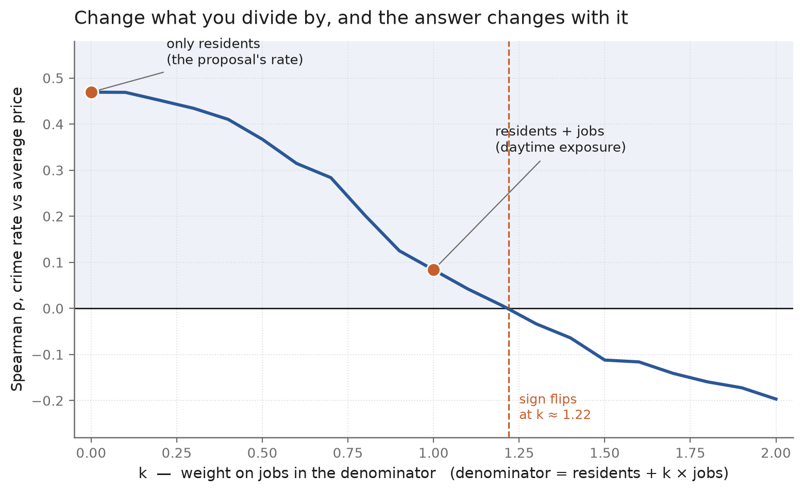
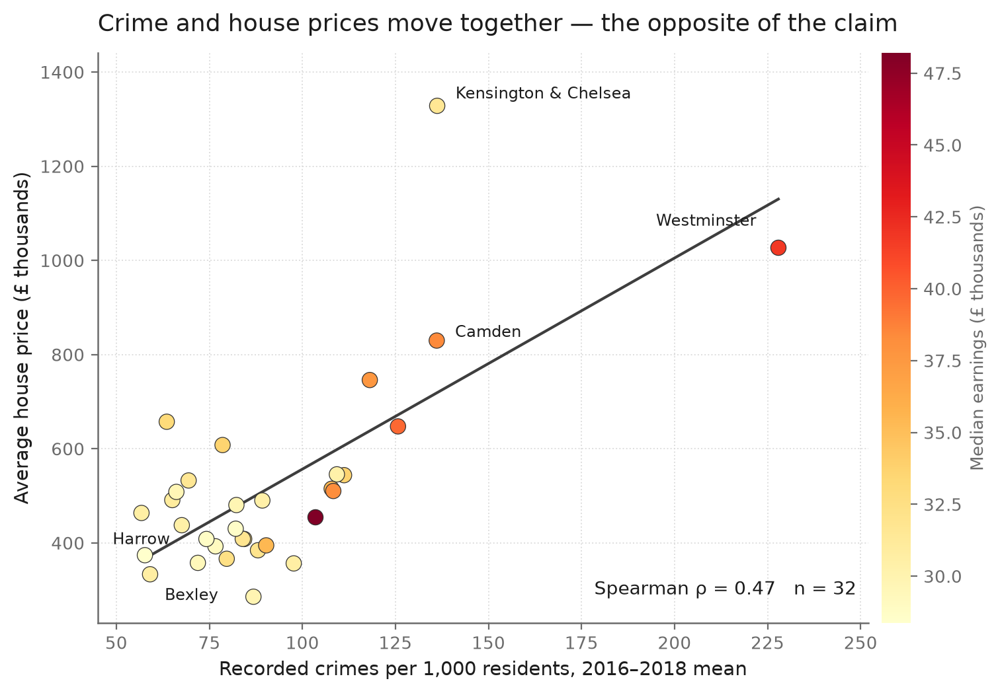
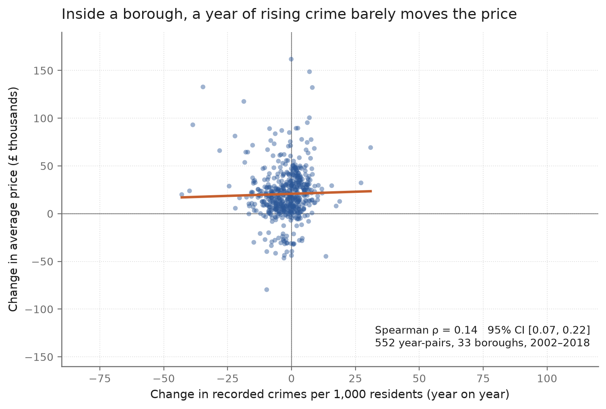

Team project · six members · 2026
Crime and House Prices in London Boroughs
Research question. Is a higher recorded crime rate associated with lower house prices across London boroughs — and does that association survive a change in how the rate is measured, where you look, and when?

- The raw cross-section is +0.47 (n = 32, permutation p = 0.008) — crime and price rise together, the opposite of common sense.
- It halves to 0.24 once median earnings are controlled, and falls to 0.08 when the denominator includes daytime workers.
- Compare a borough with itself over time and the association is 0.14 (552 year-pairs) — real, but a third of the headline.
- Split by geography and the sign changes: +0.83 in inner London, −0.29 in outer London (p = 0.20, not significant).
- Offence type matters: burglary tracks prices at 0.74, violent crime at 0.26, criminal damage at −0.01.
Conclusion: most of the apparent relationship is a between-borough difference — dense, expensive, job-rich boroughs record more crime and cost more — not something that happens when a borough's crime rate actually moves.
My role in this team
Team reporter · Project analyst. Lead product: the within-borough change analysis and its figure.
- Designed and ran the year-pair analysis — 552 pairs, cluster bootstrap over boroughs, City of London sensitivity — and produced the change figure.
- Built the reproducible pipeline that recomputes every statistic and figure from the two source CSVs; re-running it reproduces the results file byte-for-byte.
- Ran the denominator sweep and the robustness checks (earnings partialling, inner/outer split, leave-one-out, offence types).
- Wrote and delivered the project presentation; edited the introductory video.
Repository & full write-up →
Ongoing

